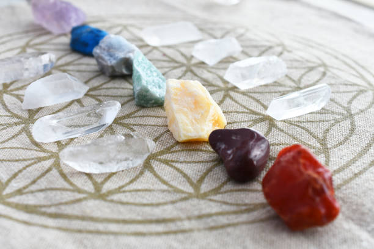

Bienvenidos a EntreAlambres



Forma de pago

Nosotros
Productos en oferta:

Arito Metis
Comprar
Arito Euphoria
Comprar
Arito Amatista
ComprarDatos que te van a servir

- LUNA LLENA O LUNA NUEVA: En muchas creencias, la Luna tiene el poder de purificación máximo. Es por ello que siempre se recomienda aprovechar la luz más brillante, que es la de la luna nueva o la luna llena, para que los cuarzos se limpien y a su vez, carguen energía. Dejar los cuarzos y cristales toda la noche para que se cubran con el manto de la luz de la luna, es la mejor forma de atraer energía nueva, de liberación y protección.
- ECLIPSES: El efecto de los eclipses, ya sean de sol o de luna, son los más importantes a nivel energético y para poder resetear la carga de un cuarzo o cristal. De preferencia, siempre aprovecha los eclipses de luna, porque son los relacionados con los cambios de estructuras y será como renovar tu piedra preciosa. Sólo tienes que dejar el cuarzo durante toda la noche, pero previamente déjalo por al menos un par de horas en agua con sal de grano, eso los limpiará por completo.
- AGUA CON SAL: Al igual que el agua del mar, que purifica la energía del cuerpo, también puede purificar un cuarzo. Por eso, es importante que coloques un tazón lleno de agua filtrada o pura y le agregues unos granos de sal de mar o sal gruesa, para que los cuarzos se purifiquen durante al menos 48 horas.

- MÚSICA DE ALTA FRECUENCIA: Elegí la que más te resuene/más te guste. Con este método podemos recargar tu cristal gracias a las frecuencias musicales que, resuenan sobre el cristal. Además tendrá grandes beneficios en tu interior.
- TIERRA: Durante la noche en una maceta de la planta que más te guste o en el jardín, enterrá los cristales bajo la tierra de 1 a 5 días. Este método, como vimos anteriormente, tiene la capacidad de limpiar y recargar tus cristales.
- LUNA: Principalmente la Luna Llena, deja los cristales bajo su influencia y antes del amanecer sacalos, las impregna de dones psíquicos. Tené en cuenta que depende de que luna sea, va a atraer diferente energía.
- SOL: Dejá tus cristales cerca de una ventana o en la terraza, donde pueda recibir los rayos del sol. Colócalos después del amanecer hasta el mediodía porque se pueden dañar.

- Primero tenés que limpiar los cristales, una vez ya limpios ahí recién vas a poder activarlos/programarlos, eso es muy importante. Luego hay que fijar una intención, antes de empezar tenés que decidir exactamente el propósito para el cual querés usar el cristal. Hay que ser lo más específico posible. Una vez que hayas decidido la intención, busca un lugar, un momento tranquilo donde te puedas concentrar y conectar.
- Respira por la nariz y exhala por la boca 3 veces, relaja tu mente completamente e imagina que estás entrando en el cristal. Permítete sumergirte completamente en su energía. Toma el cristal con tu mano izquierda (mano receptiva) y visualiza en tu mente el propósito especifico para el que vas a usar el cristal. Si tu cristal tiene un punto o terminación, mantenelo orientado hacia adentro, hacia tus brazos para ayudar a que la energia corra a través de todo tu sistema.
- Y a partir de ese momento, úsalo, y evita que toquen tus cristales; porque se va a ver afectada por otras energías. No te obsesiones, pero cuántas menos manos, mejor. Si en algún momento sentís que hay que limpiar el cristal de nuevo, ya conocen el proceso
- TIP: Podés programar cristales para vos o para otra persona. Si lo haces para alguien más recorda visualizar a esa persona y su objetivo, desde el inicio de la visualización hasta concluir.